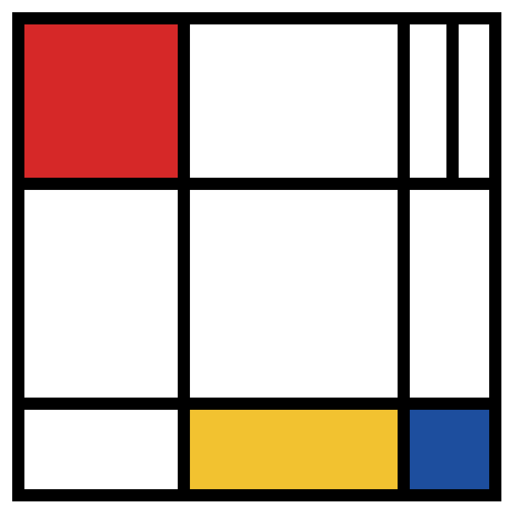

Mondrian in Turtle
Recreate a Mondrian-style painting: coloured boxes first, then thick black lines on top. One box and one line are done for you.
Instructions
Make the target picture below using turtle. No def needed: copy and change the code that is already there.
Step 1: Draw the coloured boxes. The red box is done for you. Copy its code for the blue and yellow boxes, then change the colour, the corner (goto) and the sizes.
Step 2: Draw the thick black lines ON TOP of the boxes. The first line is done for you. Use penup, goto, pendown, goto for each line.
Step 3: Draw a thick border around the whole 400 x 400 picture.
Commands you need:
import turtle · load the turtle commands
turtle.speed(0), turtle.hideturtle() · draw quickly and hide the arrow
turtle.penup(), turtle.goto(x, y), turtle.pendown() · move to a corner without drawing a line
turtle.setheading(0) · face right before each box, so every box draws the same way
turtle.fillcolor("red") · choose the colour of a box
turtle.begin_fill() … turtle.end_fill() · colour in the shape drawn between them
for i in range(2): forward(width), right(90), forward(height), right(90) · draw a rectangle
turtle.pensize(10), turtle.pencolor("black") · make the thick black lines
turtle.done() · keep the window open at the end
Tip: draw the coloured boxes FIRST, then the thick black lines on top.Your target picture

'''Mondrian in Turtle
Draw a picture in the style of the artist Piet Mondrian:
coloured boxes with thick black lines, inside a 400 x 400 square.
Look at the target picture on the activity page.'''
import turtle
turtle.speed(0)
turtle.hideturtle()
# The picture is a 400 x 400 square.
# Top left corner = (-200, 200) Bottom right corner = (200, -200)
# ---------- STEP 1: coloured boxes (draw these FIRST) ----------
turtle.pensize(1)
turtle.pencolor("black")
# Red box: top left corner (-200, 200), width 140, height 140
# (This one is done for you. Read it carefully!)
turtle.fillcolor("red")
turtle.penup()
turtle.goto(-200, 200)
turtle.setheading(0)
turtle.pendown()
turtle.begin_fill()
for i in range(2):
turtle.forward(140)
turtle.right(90)
turtle.forward(140)
turtle.right(90)
turtle.end_fill()
# Blue box: top left corner (120, -120), width 80, height 80
# Copy the red box code and change the colour, the corner and the sizes.
# Yellow box: top left corner (-60, -120), width 180, height 80
# ---------- STEP 2: thick black lines (draw these ON TOP) ----------
turtle.pensize(10)
turtle.pencolor("black")
# Vertical line at x = -60, from the top (y = 200) to the bottom (y = -200)
# (This one is done for you.)
turtle.penup()
turtle.goto(-60, 200)
turtle.pendown()
turtle.goto(-60, -200)
# Vertical line at x = 120, from top to bottom
# Horizontal line at y = 60, from left (x = -200) to right (x = 200)
# Horizontal line at y = -120, from left to right
# Short line at x = 160, from y = 200 down to y = 60
# ---------- STEP 3: thick border around the whole picture ----------
# Start at the top left corner (-200, 200), face right, then
# repeat 4 times: forward 400, turn right 90
turtle.done()
Once it's debugged — extension tasks
Work through these in order — each tier builds on the last.
Bronze
- Finish the blue and yellow boxes so your picture matches the target.
- Add all the black lines and the border.
Silver
- Change the colours and sizes to make your own Mondrian design.
- Add one more coloured box and one more black line in a new place.
Gold
- Use a variable for the line thickness (for example thick = 10) so you can change every line at once.
- Make the whole picture bigger: 600 x 600. Which numbers do you need to change?